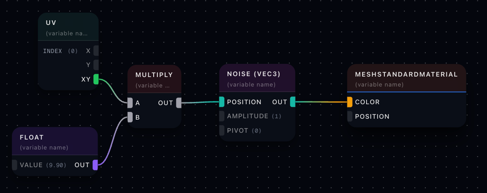
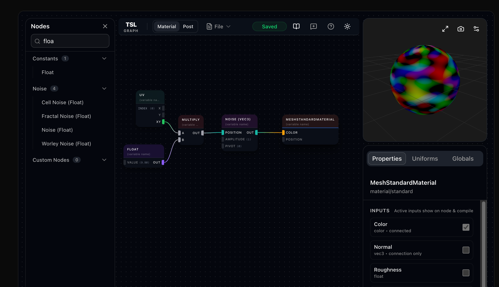

Page 30: Composition
Languages like GLSL are good for shader programming in that they map nicely to the hardware, and give us the math tools we need. However, as we start to make more complex shaders, we want languages that can support the bigger challenges. In particular:
- A lot of shader programming involves re-using pieces. We want to use the same lighting for different materials; the same materials with different textures; the same noise functions are used all over, etc.
- A lot of shader programming involves interfacing with the host system. We want convenient access to the lighting, the textures, etc.
- A lot of shader programming is done by artists and involves trial and error. We want a language that supports good tools that allow for exploration and experimentation, preferably without looking at code.
Over time, these concerns dominated the design of shading languages, so old languages like GLSL have lost favor. It’s kind of like C programming for regular computers: it was good to give us low-level access to the hardware, but it’s nice to have a modern, high-level language that makes writing programs more convenient.
Because of #2 and #3, these new languages tend to be part of high-level graphics systems (like game engines), and are specific to them. Normally, in class, I would want to pick a language that could be used in many systems, but the modern shading languages are all system-specific. Fortunately, they are all similar. I believe if you learn one, you can transfer to another one easily.
In order to address #1, shader programming languages are based on composition - they support connecting pieces of shaders together as a primary mechanism. They generally work by making each piece of a program an object, and “wiring” these objects together to describe how data flows between them. This leads nicely to visual graph interfaces.
Three.js has a built-in implementation of this paradigm: the Three.js Shading Language (TSL). Calling it a “language” may seem weird: it is more like a collection of objects that we use in a JavaScript program. But we use it like a language to express shader programs: at runtime, the JavaScript executes, creates the objects, connects them together, and then uses them to “compile” the shader into the WGSL that ultimately runs on the hardware.
The beauty of this:
- Any programming is in JavaScript. We can use all of our great JavaScript tools.
- It supports the shader/graph paradigm, allowing us to use a visual editor (if we want). The visual editor spits out JavaScript.
- It is well integrated into three.js. It provides convenient access to all of the three.js features.
So, I think this is the way we want to build shaders in the future. GLSL was great for learning: by forcing us to be close to the hardware, we had to make sure we understood what was going on. Now that we have that understanding, let’s try things that would have been really difficult in GLSL.
A First Example: Composition in TSL
I want to make a simple noise demo that uses the noise to control the colors. But I want the object to have the actual three.js standard material (with reflections and shadows and physical effects and …).
I need a noise function. I need the lighting system. I need to get all the light information from three.js. This would be hard in GLSL.
In TSL, it is easy, especially since it has noise built-in. Here’s my program:
{kind=link}

A TSL Shader Program that ties a 3D noise function to the RGB colors.
Your first reaction might be: “Is this a program?”
I am showing you the program in the graph editor. It is giving me a visual representation of the program. The graph editor is handy: it provides a nice environment for writing the programs and debugging/tuning them. The editor is called TSL Graph and is available online.
{kind=link}

Our program in the graph editor. Note that it has a tool to help me find the kinds of nodes I can make (left), an inspector to help me understand what the nodes do (lower right), and a visual test of the shader for debugging (upper right).
Let’s walk through what’s happening. We work from right to left.
The rightmost node in my program is a MeshStandardMaterial node. I want to use the lighting built into this, so I started with it. If you look carefully, you notice that it is showing two inputs: color and position. These are the two most essential inputs. Fortunately, if you don’t connect anything, three.js has reasonable defaults. Position gets the object geometry.
MeshStandardMaterial has many possible inputs - the editor is just choosing to show me the two most common ones by default. If I want to see the whole list, they are in the UI (lower right) - there are checkboxes to turn them on.
The next node is the Noise node. I specifically chose a Noise (vec3) node since I want 3D noise (so I can tie it to the RGB of the material color). It has a few inputs, and a single output. Notice that I have connected the output of the noise to the color input of the material.
The noise function needs an input - the domain we’re generating noise for. I want to tie that to the UV coordinates of the fragments we are shading. So, I need a UV node that gives me the texture coordinates. I also know that if I only look at the values in the 0-1 range of the default texture coordinate on objects, the noise will be boring - I want to have the noise change faster. So, I need to “scale up” the texture coordinates by multiplying by a constant. This is a place where the graph view is a little less convenient: I want to say uv*10, but instead I have to make a multiply node and a constant value node and wire them together.
So that’s our first TSL program!
Of course, we could have written it in JavaScript instead.
In fact, if I press the “view code” button in the editor, it will show me the JavaScript. A warning: because the editor creates both the material shader and “post-processing” shader, there is extra stuff (that I am not including).
1const _node0 = uv(0);
2const _node1 = float(9.9);
3const _node2 = mul(_node0, _node1);
4const _node3 = mx_noise_vec3(_node2, 1, 0);
5
6const material = new MeshStandardNodeMaterial();
7material.colorNode = _node3;Notice how the JavaScript code exactly matches the graph structure.
We can use this anywhere that we would have normally used some other material. There is a slight catch that we need to make sure that we import the correct parts of three.js for TSL. The editor puts this in the programs it provides:
1import { color, float, mrt, mul, mx_noise_vec3, normalView, output, pass, uv, vec3 } from 'three/tsl';
2import { MeshStandardNodeMaterial } from 'three/webgpu';Or, we can import the whole module.
Here is that program inside of the class software framework:
The code produced by the graph editor explicitly creates each node, and imports each node object separately. Here, you can see the code written two different ways - one which is identical to the original (copied) and the other which is written by hand in a very compact form:
1// explicit (from TSL Graph Editor)
2const _node0 = uv(0);
3const _node1 = float(9.9);
4const _node2 = mul(_node0, _node1);
5const _node3 = mx_noise_vec3(_node2, 1, 0);
6material.colorNode = _node3;
7
8// compact (written by hand)
9material.colorNode = tsl.mx_noise_vec3(tsl.uv(0).mul(9.9),1,0);As you can see, you can write these shaders very compactly in JavaScript.
Composition and TSL
Composition-based “languages” are the new standard for writing shaders. TSL provides an implementation for three.js that embraces JavaScript to make a concise way to express shaders in code, and the graph editor provides a convenient way to write shaders, experiment with them, and debug them.
Next: Page 31 - Texture Tsl Examples